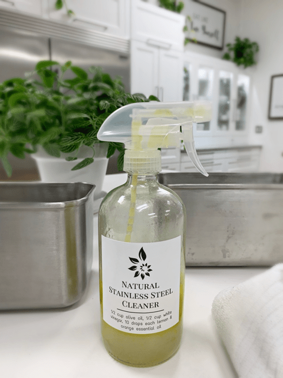
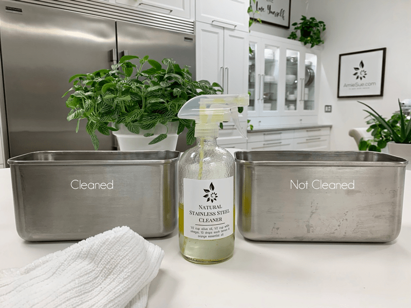
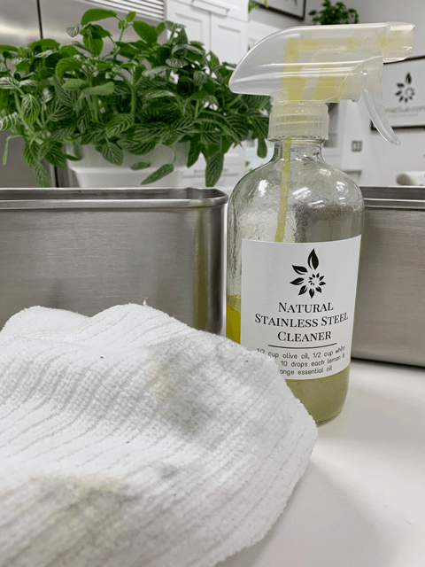

Homemade Stainless Steel Cleaner

Fingerprints, smudges, streaks, oh my! I love the look and durability of stainless steel but it can be a bugger to keep nice looking. In my Studio Kitchen, I have many objects (sink, table, organizers, etc) that are prone to such conditions. So how do I keep them clean? In the past, I used a commercially made stainless steel cleaner BUT over the years I have been working on eliminating toxic cleaners from our home.
So, I did my homework (and I didn’t even let my dog eat it hehe). When using chemicals whether it be on my own skin, Bob’s skin, Milo (the pup), or even if I use them to clean the counters, toilet, etc. I turn to EWG Healthy Guide to Healthy Cleaning. They dissect the ingredients that manufacturers use in their products and give them an overall rating.
Well, my Weiman Stainless Steel Cleaner & Polish Aerosol Spray cleaner got an F! It did as it claimed, it cleaned and shined my items to looking darn near brand new but it came with hefty price tag… and I am not talking about the cost of it financially but the cost of health in using it! In the report, it read, “May contain ingredients with potential for damage to DNA; cancer; nervous system effects”
Well, shoot fire and save matches! That went straight into the trash bin. Now what?! I can’t use that stuff but surely I can’t live with all those fingerprints *gasps*… how will I ever show my face?! haha Ok, so maybe I am being a bit dramatic but seriously… I needed to find an alternative and a healthy one to boot.
Finally, I found a natural alternative that I could make in my own kitchen. I will share the recipe down below but before we move forward, we need to know HOW to clean stainless steel effectively to get the best results. So yea, grab your favorite snack and beverage because this is gonna get good folks. lol

Go WITH the Grain
This is NOT the time to go against the grain. In most things of life, I tend to go against the grain. I don’t do it intentionally, it’s just how I roll. BUT when it comes to cleaning stainless steel… it is best to go WITH the grain. You may have never really noticed that it even has a grain but just like wood and some fabrics, steel does indeed have a grain. If you look closely you will see faint striations on the surface you are cleaning.
Now if you choose to go against the grain you will not ruin whatever you are cleaning but if you would be willing to follow the rules on this matter more cleaning residue will get deeper into the tiny crevices of the grain giving you optimum shine and cleanliness.
Cleaning Cloths
Using the right cloth will also help with a clean, shiny outcome. I use microfiber cloths, but whatever you decide to use make sure that they are non-abrasive cleaning rags. Another good option is 100 percent cotton rags because they leave almost no residual lint. You will use one rag to spread the cleaner on with, and the second rag to buff it shiny. If your daydreaming about using paper towels, (wake up)… because they’ll leave lint particles behind.
Ingredients
It’s very simple, olive oil, white vinegar, and food-grade essential oil. There are other ways to go about cleaning stainless steel but I found this one to the best so here I am in all my glory, sharing with you, my friend. So, why use these particular ingredients? Glad you asked because just like the ingredients you use in the foods you eat… it’s important to understand the role that they all play.
White Vinegar (cleans)
Stinks huh? I know, I am not a fan of the smell of white vinegar either BUT it’s great at cutting through the grease and grime because it contains a mild acid, called acetic acid. But hold on just one second because you need to first check your owner’s manual to ensure that whatever appliance or fixture you are cleaning doesn’t have an oleophobic (oil-repellent) coating, which can be stripped by the vinegar solution. I can not be held responsible should things go south, just saying.
Essential Oil (buffers the smell)
Pick your passion; grapefruit, lime, lemon, tangerine, orange, or mandarin… because it is being added to offset the pungent (that’s putting it nicely) scent of the vinegar during application. It’s only meant to impart a temporary fragrance that will keep you from curling your nose during the cleaning process. You can thank me now.
Olive Oil (shines)
So here’s the scoop with olive oil… it can go rancid over time and if your cleaning solution goes rancid, well that just means you have been slacking in the household chores. haha No, but seriously, it is best to use an amber shaded glass jar and/or keep it stored in a dark cabinet to prevent this from happening. Don’t do as I did and use a clear glass bottle unless you do a lot of cleaning… which I do.

Ingredients:
- 1/2 cup olive oil
- 1/2 cup white vinegar
- 10-20 drops essential oil
Directions:
Mixing
- In a glass spray bottle, combine the oil, vinegar, and essential oil.
- Screw the sprayer on tightly and give a good shake.
- Label… be sure to label the bottle with the ingredients listed. You don’t want someone to get a wild hair and clean the bathroom mirrors with this stuff.
Ready to Clean? (me either but for the sake of this post, let’s pretend that we are)
- *Shake before each use… the bottle, not you, silly.
- Determine the direction of the “grain” on the stainless steel item and in the direction of the grain start wiping down the sprayed area with a microfiber cloth to lightly dust using extra elbow action to loosen any caked-on grime. Repeat the process of spraying and wiping to clean the entire appliance.
- Using the second cloth to remove excess oil and boost the shine. If you skip this step, the cleaner can leave streaks if left to air dry.
- Keep this solution out of the reach of children. Don’t tempt the little ones to use spray bottles unattended. While none of the ingredients used are harmful, the next spray bottle they play with might contain something nastier.
© AmieSue.com